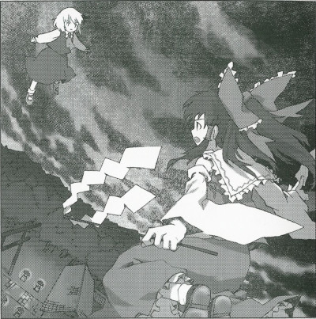

|
Season 118 Classification: Special Feature Article Memo Editor: Aya
Shameimaru
>Mysterious Scarlet Mist Over Gensokyo The first major incident in a long time finally caused the shrine maiden to take action.It is presently remembered as the scarlet mist that covered Gensokyo.  The unusual density of the fog blocked out almost all of the sunlight, and because of that, it felt cold even in the summer. Once it had been a few days since the fog had descended, its density continued to increase, although there was no sign it would completely shut out the sunlight. It was obvious that this scarlet mist was not caused by natural phenomena. If the culprit behind the problem was not stopped, it is likely to believe that no one on the ground would ever see the light of day again. An incident on such a massive scale could only be handled by the human shrine maiden. We youkai found the shrine maiden's actions to be rather comical to observe. X Month, X Day. The shrine maiden finally takes action. The shrine maiden seemed to know her destination, and she didn't get lost even when kicking around other youkai en route. She may have even attacked me if had been careless enough to get too close. The shrine maiden seemed to be heading towards the lake. Because the mist had been spread to every corner of the then-gloomy Gensokyo, I still do not know how she was able to determine her target. I guess that's a shrine maiden's sixth sense. The shrine maiden disappeared over the lake. It seemed that the offender lived in the lake, or maybe it was just on the way to her real goal. I couldn't see anything above the lake, and the fog was so thick, I quickly lost sight of her. Unfortunately, I had to abandon any further pursuit. Whenever people say the shrine maiden is on the move, it seems that the incident will be solved soon enough. Certainly, the fog soon cleared up, the sunlight reached the ground, and we were able to say goodbye to the cold summer. The motto of us youkai is that fun can be found in any kind of situation. If the scarlet mist incident was heading towards resolution, it wouldn't be possible to enjoy the incident any longer. So, I decided to determine who caused the incident, and their reason for bring about the fog. That was how I was able to enjoy the incident. The most striking feature of the mist was its scarlet color. Why did the fog need to be dyed scarlet? Once I thought about it, the answer was very simple. When placed under a scarlet glow, the scarlet flowers appear to have no color. That means that under that kind of light, it would be impossible to tell the difference between scarlet and white flowers. The goal of the scarlet mist was to remove the distiction between scarlet and white, to remove the border between them. I'm sure that many people would be able to imagine why that would be a bad omen. It was likely that the offender wanted to monopolize the area not covered in the mist, which was her own property. It's such a naive goal, it's laughable. However, it was easy for us youkai to enjoy things during the unique situation of this incident. At the same time when scarlet lost all its color, this introduced to Gensokyo a new light with a large difference in phase from the old light. At that time, it was possible to see things in this world that couldn't be seen under the normal wavelength. With our field of visions tinted scarlet, we took a leisurely stroll through Gensokyo. We enjoyed a world that was slightly different from the usual. If it must be done, then incidents shouldn't be resolved in a hurry, but until we've gotten our fill of the lifestyle under these conditions.
(Aya Shameimaru)
|
|
Touhou Koumakyou ~ the Embodiment of Scarlet Devil.
On a day in the summer, Gensokyo was silently wrapped up in a disturbing, evil mist. The power of the mist would have even exceeded Gensokyo's boundaries into the human world if it continued to expand, so the shrine maiden who preserves the order in Gensokyo finally stood up to face the one behind this abnormal situation. Relying on her intuition, Reimu headed towards the lake, finally arriving at the mansion where a red devil resides... |
| [PREVIOUS ARTICLE : Reimu] | [INDEX] | [NEXT ARTICLE : Spring Snow Incident] |